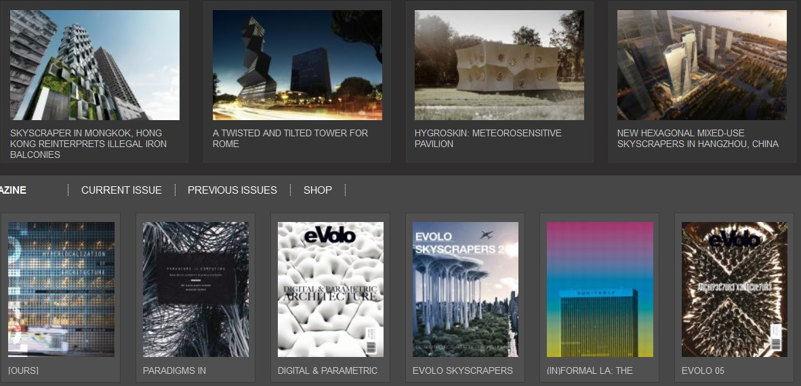

2015-10-01
開放源碼的自由文化運動和獲利生存
開放源碼軟體(open-source software)、開放源碼硬體(open hardware) 自由軟體(free software)是近年來自由文化運動(free culture movement)很重要的一環，開放源碼意指，為了不同情境下的技術人員去調整改用、協力智慧後續研發、造福社會上資源弱勢等目的，將電腦程式、工業產品的原始製造資訊公開化。科技資訊在技術社群間公開分享的作法，早在網際網路和個人電腦盛行前就已行之有年，例如：二十世紀初，原本獨佔二行程引擎 (2-cycle gasoline engine)專利的 George B. Selden在獨立汽車廠商 Henry Ford研發出另一項引擎專利後，原本的專利和作法受到新技術的威脅，在美國引發車廠之間技術公開和共享的協定，而 推動了後來美國汽車製造工業的繁榮。另一個例子為：通用公共授權條款GNU (General Public License)和自由軟體運動的發起人Richard Matthew Stallman辦公室印表機更新後，原本舊的列印驅動程式造成新印表機列印上的不便和困擾，但辦公室的電腦工程師們卻苦於沒有列印程式的原始碼而無法修改設定，也因此Stallman認為基於便利使用者各自需求的立場，必須開放源碼給軟體使用者自行去調整。
秉持開放分享精神的自由文化運動，這些年蔓延到了製造業和科技業以外的領域，Creative Commons創用CC授權在Wikipedia、Flickr、YouTube等網路上資訊和影音、圖文、媒體與創意產業的世界日漸普及，便利、豐富了更多人的日常生活；但是，無論開放源碼軟、硬體，或採用創用CC授權分享的那些創作，最常面臨到的問題就是：資訊和技術、作品都公開分享了，那如何維持營生的獲利、怎麼有經費資源再後續研發、創作呢？
當今著名的幾個開源軟體和程式，如：Linux、Python、Mozilla Firefox的開發公司或基金會，現在仍持續營運發展，除了志工、捐贈等收入來源外，他們的這些開源程式軟體也有各自不同的獲利模式。科技業的生產和消費生態與創意產業甚有差異，已另有些研究和文章在討論開放源碼與獲利，本文以下乃將關注焦點擺在：探討創用CC授權於文創產業、設計業開放設計上，其開放與獲利之平衡、發展的可行性。
創用CC授權與開放設計獲利的策略
開放設計（open design） 是原作者同意將其設計讓使用者在合理用途下自由傳播，並依照原作者釋出的授權，彈性規範使用者可修改、重組、延伸創作、商業性用途與否。以色列產品設計師Ronen Kadushin個人網站上分享他的作品設計藍圖、 eVolo分享設計資訊和平面作品等，這些都是開放設計的極佳應用。雖然至今開放設計的案例為數仍不如媒體界多，但從現有的例子來看，開放設計在知識經濟和消費社會的環境下，能有哪些利用開放去達到獲利的策略呢？

圖像來源：http://www.evolo.us/，網頁截圖。
一、零組件之藍圖開放，便於製造和生產：設計節和設計展場中，常見許多精美又新奇的家居燈飾作品，五彩繽紛的殊異造型下，其實燈具發光的原理大同小異；然而有些美術專長背景的設計師，即便想出了新穎的燈飾外觀，卻限於燈座產製的技術性問題，而使得將構想製造為實體產品的過程困難重重。有設計師因此提出，倘若將基本的燈具模組、電路板模型、螺絲等基本零組件的藍圖用創用CC開放分享給製造商和設計師，將可便於設計出更多獨具巧思的新作。其他關於電器、電腦科技等工業設計類的產品也同此理。這是公開知識可促進設計和產製而獲利的好處。
二、吸引和拉攏消費族群：設計師在自己的社群網站、部落格上用創用CC授權公開正在發想的設計品藍圖，創意的點子讓人點閱和散佈而吸引來更多潛在客群，藉由互動與討論收集使用者需求來調整作品，達到上市前「試水溫」市調的效果，類似音樂界上傳歌曲Demo或主打歌，刺激進一步購買欲望的作法。
舉辦消費者參與式設計活動，完善作品之餘也讓消費者有貢獻度和參與感，成為將來產品銷售時的忠實消費群。這是目前時尚、服裝設計業者「客製化量產」(mass customization)策略的延伸運用，比方德國設計師Cecilia Palmer的時尚品牌Pamoyo，因公開服飾版型於網路上讓消費者自由重組出，就成為吸引消費者目光的話題。西班牙獨立電影公司 Riot Cinema Collective 也因創用CC授權電影預告片，而從粉絲創作裡選出宇航員 (The Cosmonaut)這部科幻電影的官方海報，並用粉絲的混搭腳本完成了電影劇本的一部份。
此外，年輕珠寶設計師在其Nervous System網站上利用電腦輔助設計(computer aid design, CAD)程式，來讓消費者客製化下訂單；或者於Ponoko 這種產品設計線上訂製和產銷的平台上，消費者和設計師一起設計其樂無窮，消費者滿意獲得個性化商品、設計師獲利，且如此「無風險的零售(no-risk retailing)」也不會造成庫存量供過於求的資源浪費。
三、非商業性用途標示之妙用：創用CC授權裡的非商業性的要素，替原作設計師保留了銷售的權利。在個人網站、設計商展上公開設計作品或藍圖後，除了吸引消費者目光，也會引來廠商、設計公司的關注，進而聯絡設計師洽談商品產製或於商業銷售的授權，為設計師爭取到商機。即使設計品為簡單的手做居家小物，也能如 Sew can do的設計師Cheryl那樣，在網路商店Green Hedgehog上販售DIY材料組件而獲利。
四、培養實力和累積知名度：網路傳播的影響力無遠弗屆，新秀創意人才和設計師將自己的創作分享在The Behance Network等國際著名設計媒體平台上，與網友和同好交流意見、增進技巧、吸引國際設計人注目之外，因為創用CC授權姓名標示 才得以轉載和散播使用的規定，四處傳散作品能夠幫原作者靠網路「曝光度」來累積知名度。比如國內知名的圖文創作部落客輔大猴，他採用創用CC的部落格就是依靠網友口耳相傳打響名號，後來作品結集出版時已是著名的漫畫家。至於已經成名的設計師，若將現已停產的過往作品和藍圖釋出，一方面能透過這些名作讓更多人認識他而想購買其新作，另方面甚至也可藉此讓新秀設計師觀摩學習，而贏得社會的肯定。
才得以轉載和散播使用的規定，四處傳散作品能夠幫原作者靠網路「曝光度」來累積知名度。比如國內知名的圖文創作部落客輔大猴，他採用創用CC的部落格就是依靠網友口耳相傳打響名號，後來作品結集出版時已是著名的漫畫家。至於已經成名的設計師，若將現已停產的過往作品和藍圖釋出，一方面能透過這些名作讓更多人認識他而想購買其新作，另方面甚至也可藉此讓新秀設計師觀摩學習，而贏得社會的肯定。
開放源碼、共享創意使人類科技和藝術在眾人之力下，擁有不斷創新、甚至改進生活的動力，而此種自由文化運動「分享」的善意理念，其實與創作者的獲利生存並不互斥、不相違背，端賴文創工作者和設計師們發揮創意，找到開放與獲利之間的平衡策略。
參考資料：
1. http://en.wikipedia.org/wiki/Open-source_culture
2. http://en.wikipedia.org/wiki/Richard_Stallman
3. http://www.linux.org.tw/CLDP/OLD/doc/osr.html
4. http://creativecommons.tw/blog/20130123
5. http://creativecommons.tw/blog/20101214